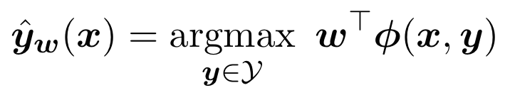
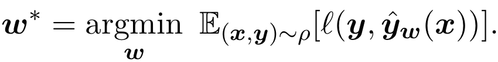
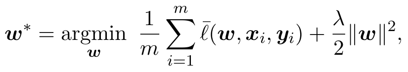

Consider a supervised learning setting with input instances x ∈ X and target labels y ∈ Y, which refers to a set of complex objects with an internal structure. We assumed a fixed mapping φ : X × Y → Rd from the set of input objects and target labels to a real vector of length d, where we call the elements of this mapping feature functions or feature maps. Also consider a linear decoder with parameters w ∈ Rd, such that yˆw is a good approximation to the true label of x, as follows:

Ideally, the learning algorithm finds w such that the prediction rule optimizes the expected desired measure of preference or evaluation metric on unseen data. We define a cost func- tion, l(y,yˆw), to be a non-negative measure of error when predicting yˆw instead of y as the label of x. Our goal is to find the parameters vector w that minimizes this function. Often the desired evaluation metric is a utility function that needs to be maximized (like BLEU or NDCG) and then we define the cost to be 1 minus the evaluation metric.
We assume that exists some unknown probability distribution ρ over pairs (x, y) where y is the desired output for input x. We would like to set w so as to minimize the expected cost, or the risk, for predicting yˆw,

This objective function is hard to minimize directly (Keshet, 2014). Given a training set of examples S = {(xi,yi)}mi=1, where each pair (xi,yi) is drawn i.i.d from ρ, a common practice is to find the model parameters that minimize the regularized mean surrogate loss,

where l(w, x, y) is a surrogate loss function, and λ is a trade-off parameter between the loss
term and the regularization. Each algorithm has its own definition of the surrogate loss, e.g., the surrogate loss in max-margin Markov model (Taskar et al., 2003) is the structured hinge loss with a Hamming cost, whereas the surrogate loss in conditional random fields (Lafferty et al., 2001) is the log loss function. A general survey on structured prediction algorithms and their prediction rules is given in Keshet (2014).